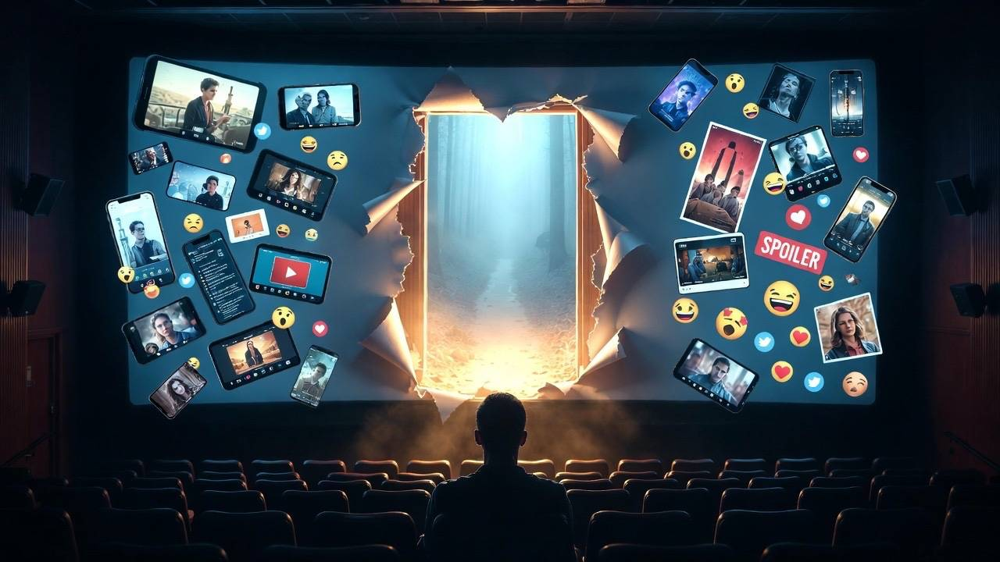
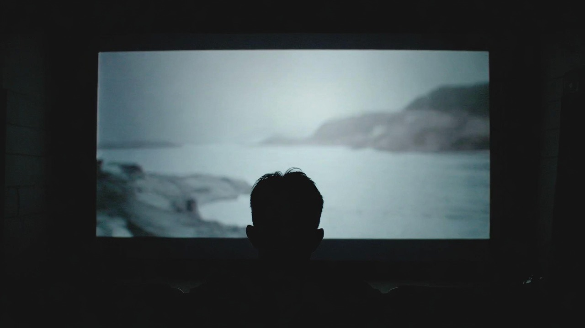
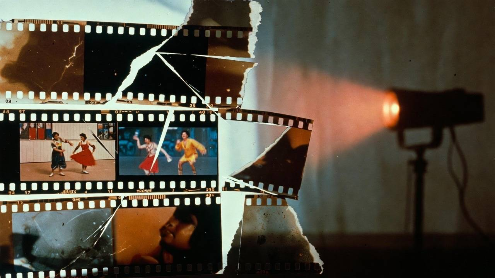
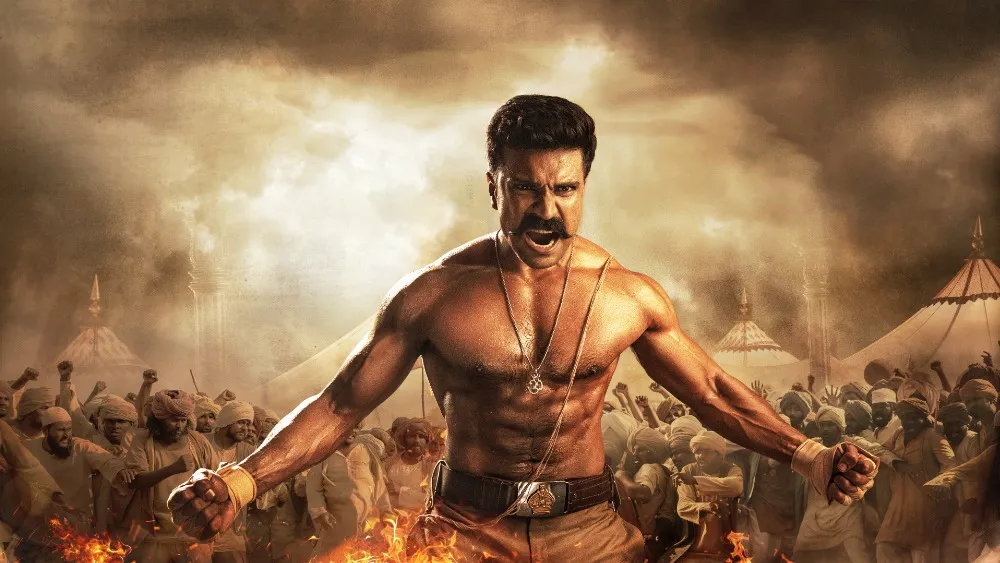
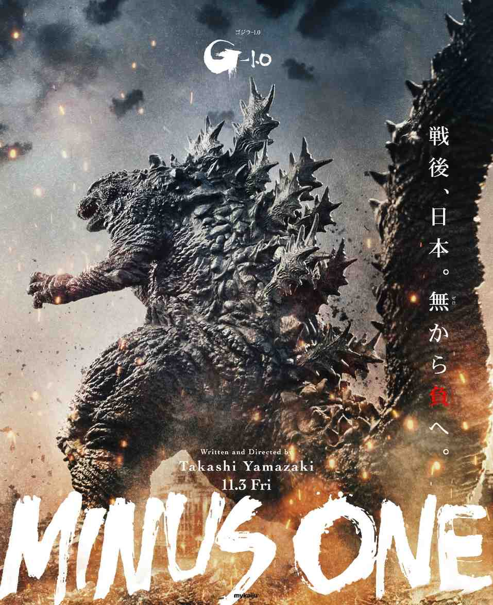

```
```

Between the Frames
Are we killing cinema's magic before entering the theatre?
Trailers, clips, reels, "mass moments" — when you already know everything, what's left to feel inside the hall?

Between the Frames
The Quiet Hesitation Around Subtitled Films
It's not hate. It's timing, fatigue, and the tiny pause before pressing play.

Between the Frames
Why Indian Cinema Is So Misunderstood
A look at where the stereotypes come from, what the criticism gets right, and what it completely misses.
Between the Frames
Understanding Chinese Fantasy Without a Rulebook
Why wuxia and xianxia feel overwhelming at first, and what changes once the world starts making sense.
Between the Frames
I Can Watch Five Episodes, But Not One Movie
Why we can binge entire seasons but struggle to commit to a single two-hour film.

Between the Frames
India's Big Bet: Three Films That Could Change the Conversation
Ramayana, Baahubali: The Eternal War, and Varanasi — ambition, scale, and intent quietly shifting.

Between the Frames
How Small Budgets Expose Better Filmmaking
When constraints force decisions early, the craft shows — and the excuses disappear.